<!doctype html>
<html>
    <head>
        <meta charset="utf-8">
        <meta name="viewport" content="width=device-width, initial-scale=1.0, maximum-scale=1.0, user-scalable=no">

        <title>reveal.js</title>

        <link rel="stylesheet" href="css/reveal.css">
        <link rel="stylesheet" href="css/theme/black.css">


        <style>
            .reveal {
                font-size: 35px;
            }
            /* inlined custom css*/
            .reveal section.full-screen {
                font-size: 30px !important;
            }
            .reveal section.full-screen pre {
                /*width: 100%;*/
                display: contents;
                margin: auto;
            }
            .reveal section.full-screen code {
                display: inline-block;
                max-height: unset;
            }
            .reveal h1 {
              text-align: center;
            }
            .reveal * {
              text-transform: None !important;
              text-align: left;
            }
            .reveal ul,
            .reveal ol {
              display: block;
            }
            .reveal blockquote,
            .reveal pre {
              width: 100%;
            }
            .reveal .centered {
              display: table;
              margin: 0 auto;
            }
            .reveal .center > * {
              display: table;
              margin: 0 auto;
            }
        </style>

        <!-- Theme used for syntax highlighting of code -->
        <link rel="stylesheet" href="lib/css/zenburn.css">

        <!-- Printing and PDF exports -->
        <script>
            var link = document.createElement( 'link' );
            link.rel = 'stylesheet';
            link.type = 'text/css';
            link.href = window.location.search.match( /print-pdf/gi ) ? 'css/print/pdf.css' : 'css/print/paper.css';
            document.getElementsByTagName( 'head' )[0].appendChild( link );
        </script>
    </head>
    <body>
        <div class="reveal">
            <div class="slides">
                <!-- Slides are separated by newline + three dashes + newline, vertical slides identical but two dashes -->
                <section data-markdown data-separator="^\n---\n$" data-separator-vertical="^\n--\n$">
                    <script type="text/template">
[//]: # (to be used with marp, fork git@github.com:H--o-l/marp.git)


# L' Informatique

## Python

Note:
Beaucoup de terme Anglais

---

## Hoël
<br/>
<br/>

Informatique depuis 2010
- ST Micro
- CEA
- Alstom
- Web (Tolteck)

Note:
très rapide

---

## Importance de l'informatique

<br/>

### Voiture, train, avion, satellite, armement, automatisation


<br/>

### Echange d'informations, Internet

<br/>

### Traitement de données

---

## Histoire

<br/>

Mathématiques et électronique analogique

<br/>

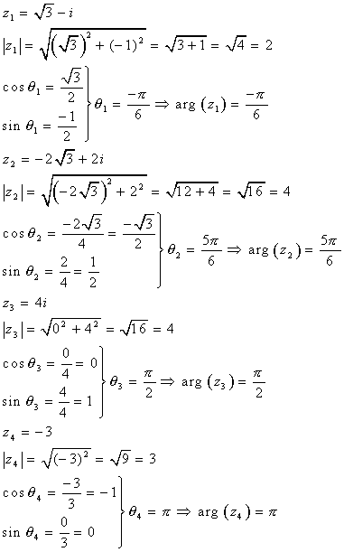
&emsp;&emsp;


---


### Alan Mathison Turing - Machine de Turing - 1936

Un programme est une liste d'instructions.


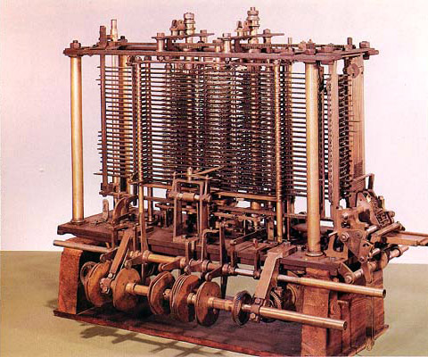


Note:
Parler un peu de la vie de Turing, puis de la différence avec les mathétiques.
Aussi machines mécanique

---

# Transistor

C'est un simple interrupteur.

<br/>

<div class="centered">
  
  &emsp;&emsp;&emsp;
  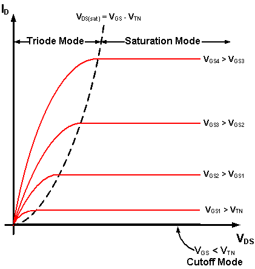
</div>

Note:
Interrupteur

---

### L'électronique numérique apparait (0-1)

<br/>

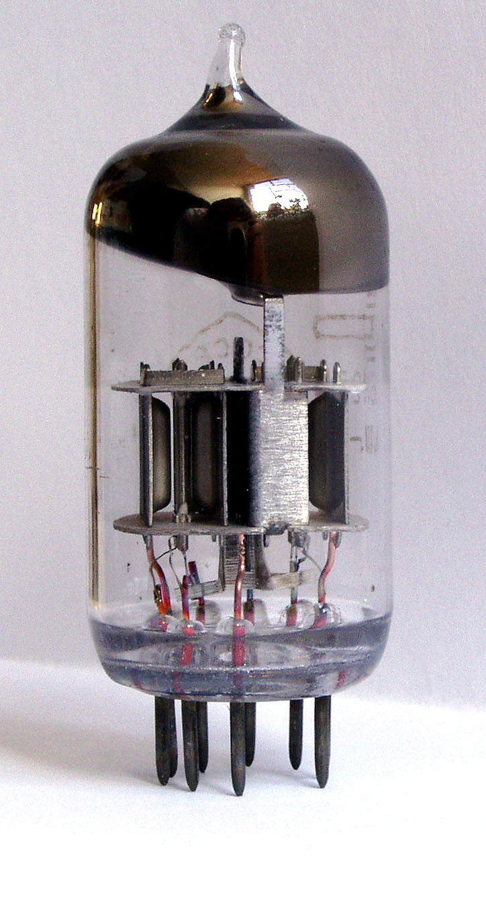

IBM commercialise les premiers gros calculateurs.

Calcul de trajectoire balistique (_Les figures de l'ombre_).

&#x21D2; Néanmoins l'électronique n'est pas prêt.

&emsp; Le terme bug vient de cette époque.


---

### Jack St. Clair Kilby - Circuit intégré 1959

<br/>

1. Fiable
2. Beaucoup plus petit

<br/>

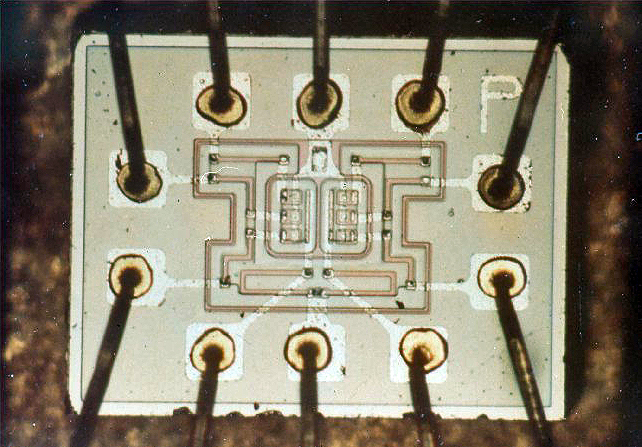

<br/>


&#x21D2; L'électronique est prêt

Note:
Travaillait pour Texas Instruments.

---

# CPU

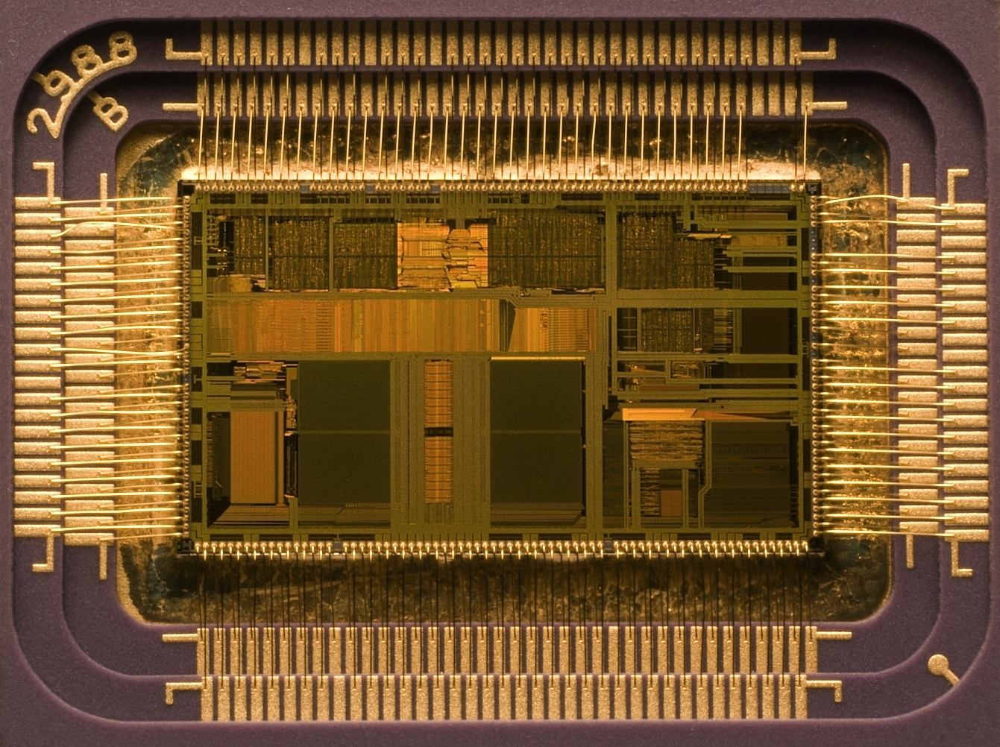

<br/>


---

# CPU

<br/>

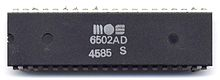

<br/>

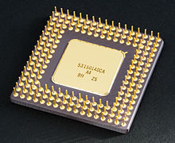


---

# CPU

<br/>
<br/>


<br/>
<br/>
<br/>
<br/>


---

<!-- .element: class="full-screen" -->


# Assembleur

<br/>


```assembly
                 .global _start

                 .comm   BUFF    , N

                 _start: mov     $3      , %eax
                         mov     $0      , %ebx
                         mov     $BUFF   , %ecx
                         mov     $N      , %edx
                         int     $0x80

                         mov     %eax    , %edx
                         mov     $4      , %eax
                         mov     $1      , %ebx
                         mov     $BUFF   , %ecx
                         int     $0x80

                         mov     $1      , %eax
                         mov     $0      , %ebx
                         int     $0x80
```


---

# CPU

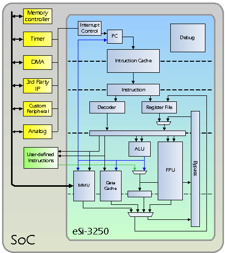

<br/>

Note:
ALU = machine de Turing


---

# CPU

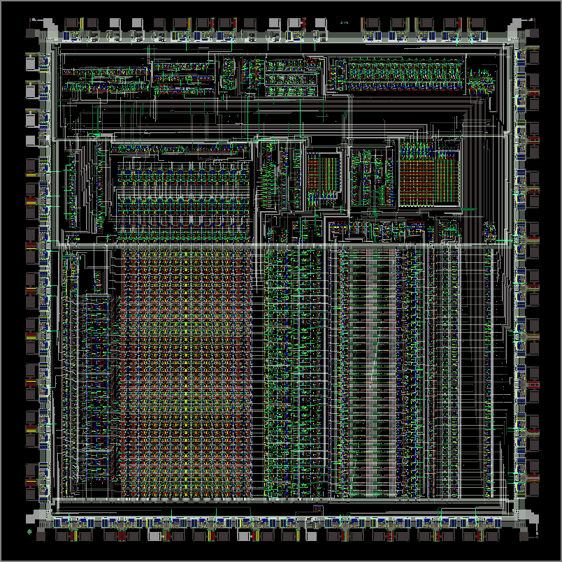

Note:
url http://www.righto.com/2015/12/reverse-engineering-arm1-ancestor-of.html

La clock est en haut au milieu, la fréquence est de 1 ou 2 hertz.

---

### Margaret Hamilton - Programme Apollo - 1966
(Et missiles inter-continentaux)


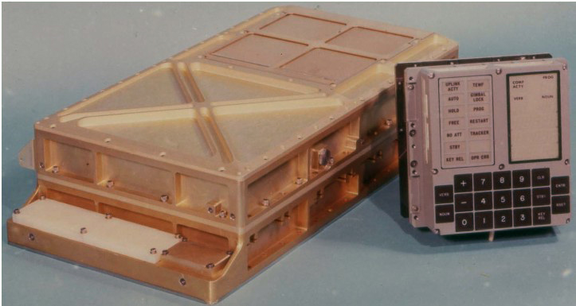


Note:
Disparition de l'informatique Russe dans les années 70 dû au manque de standardisation.

---

### BASIC - 1964

<br/>

On ne code déjà plus en assembleur.

Le BASIC est interactif, il facilite l'apprentissage et la résolution des erreurs au fur et à mesure de l'exécution (// Python).

<br/>

```BASIC
 10 INPUT "Quel est votre nom ? "; NOM$
 20 PRINT "Bonjour "; NOM$
 30 INPUT "Combien d'étoiles voulez-vous ? "; NOMBRE
 40 LET ETOILE$ = ""
 50 FOR I = 1 TO NOMBRE
 60 LET ETOILE$ = ETOILE$ + "*"
 70 NEXT I
 80 PRINT ETOILE$
 90 INPUT "Voulez-vous plus d'étoiles ? "; ETOILE$
100 IF LEN(ETOILE$) = 0 THEN GOTO 90
110 LET ETOILE$ = LEFT$(ETOILE$, 1)
120 IF (ETOILE$ = "O") OR (ETOILE$ = "o") THEN GOTO 30
130 PRINT "Au revoir ";
140 FOR I = 1 TO 200
150 PRINT NOM$; " ";
160 NEXT I
170 LPRINT
```

---

Avec l'électronique intégré la puissance de calcul augmente.

<br/>

- OS

- Langages "évolués" + Compilateurs & interpréteurs

- Librairies

- Numérisation

---

<!-- .element: class="full-screen" -->

```text
   +------------------------------+-----------------------+
   |                              |                       |  +---+
   |  CPU / Microcontrôleurs      | Unités specialisées : |      |
   |  Langage :  assembleur       | - calcul flottant     |      |
>> |  Deux familles : ARM et x86  | - GPU                 |      | Matériel
^  |                              | - cryptographie       |      |
^  |                              | - réseau de neurones  |  +---+
^  +------------------------------+-----------------------+
^     ^                                                ^
^     ^     Programmes compilés, chargés en mémoire    ^
^     ^                                                ^
^  +------------------------------------------------------+
^  |                                                      |  +---+
^  |            Drivers, TCP/IP                           |      |
^  |                                                      |      |
^  +------------------------------+-----------------------+      |
^  |                              |                       |      |
^  |                              |                       |      | Programmes en C
^  | OS génériques :              | OS spécialisés :      |      | Pilotent l'électronique
^  | iOS, Windows, Linux, Android | - temps réel          |      | Attribuent les ressources
^  |                              | - supercalculateur    |      | Assurent la sécurité
^  |                              |                       |      |
^  |                              |                       |      |
^  +------------------------------+-----------------------+      |
^  |                                                      |      |
^  |                Isolement, sécurité                   |      |
^  |                                                      |  +---+
^  +------------------------+-----------------------------+
^  |                        |                             |  +---+
^  | Langages compilés :    | Languges interprétés :      |      |
^  | - rapides              | - lents                     |      |
^  | - un seul OS à la fois | - cross plateformes         |      | Programmes
^< | - stables              | - évoluent rapidement       |      |  utilisateurs
   |                        |                             |      |
   | C, C++, Go, Rust, Ada  | Python, Java, Javascript..  |      |
   |                        | ~~~~~~~                     |  +---+
   +------------------------+-----------------------------+
```

Note:
Bien expliquer le raccourci sur la gauche pour les microcontroleurs.
Empilement technologique, stack.
Unité élémentaire de l'informatique (plus petit élément indivisible).
Comprend TCP/IP

---

<!-- .element: class="center" -->

### Microcontrôleur 1-2$ &emsp;&emsp;&emsp; Ordinateur 20$&emsp;

<br/>
<br/>

&emsp;&emsp;&emsp;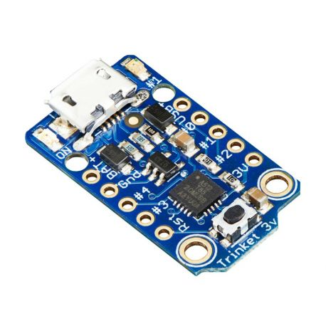
&emsp;&emsp;&emsp;&emsp;&emsp;


---

Ce "plus petit élément" est miniaturisé, optimisé, et standardisé encore et encore.

Améliorations de notre robot :
- simplicité d'utilisation
- réduction du coût


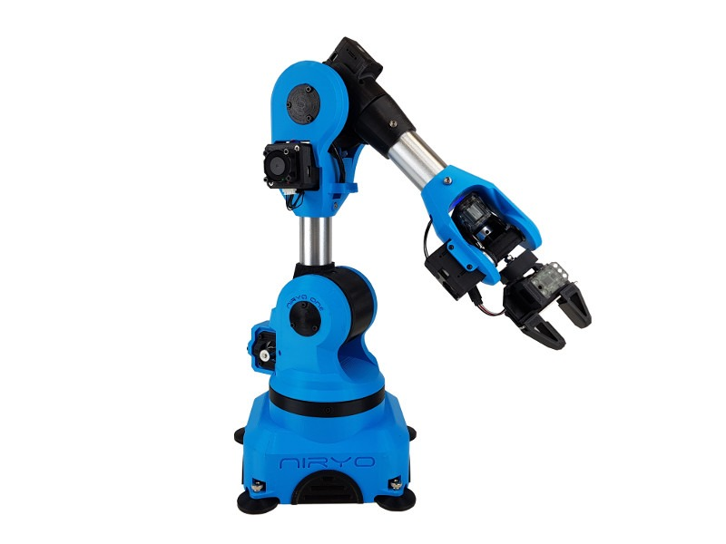

---

### Internet

https://internet-map.net

https://www.submarinecablemap.com

https://cybermap.kaspersky.com

---

40 ans que l'on utilise le même empilement de technologies.

<br/>

Le matériel de demain :

Réseaux de neurones et ordinateurs quantiques.

<br/>

&#x21D2; De nouveaux langages, théories, OS sont en cours de développement.

---


# Quelques questions récurrentes

<br/>

1. Monolithique versus micro
2. Open-source versus propriétaire
3. Compilé versus interprété
4. Sécurité (bug)
5. ...

---

### Monolithique versus micro

<br/>

1990s : Unix versus Linux

<br/>

On a essayé les micro-OS mais les avantages étaient trop faibles par rapport à la réduction des performances.

<br/>

Les OS sont monolithiques, mais modulables à la compilation.

<br/>

---

### Monolithique versus micro.

Internet, micro-services et micro-ordinateurs dominent.

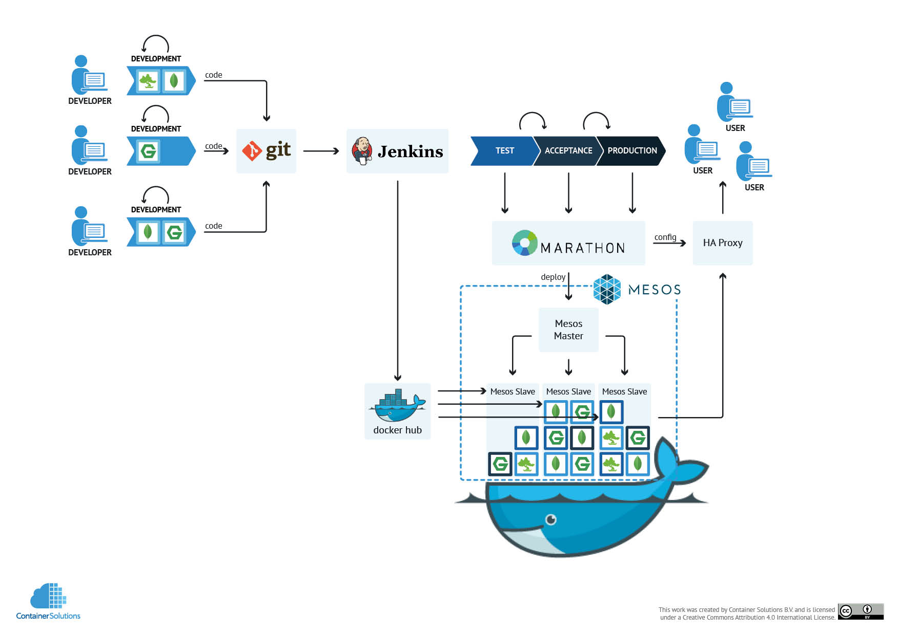

Note:
Cloud
Scalabilité & sécurité
Permet d'avoir Netfix sans pannes

---

### Open-source versus propriétaire


2001 :

> Linux is a cancer that attaches itself in an intellectual property sense to everything it touches
> Steve Ballmer - Microsoft CEO


2016 :

Microsoft membres Platinium de la linux fondation (> 500 k$ an)

<br/>

L'open source est une ressource stratégique :
- contrôler + exploiter

Bénéficie à tout le monde, petits & grands, publiques & privés.

Note:
Pose des questions économique : sort du PIB
Dès domaines important y échappe totalement => militaire

---

### Open-source

Exemples : Python, libraire *keyboard*, librairie *requests*.

```sh
$ pip install keyboard
$ pip install requests
```
````py
# -*- coding: utf-8 -*-
# !/usr/bin/env python3

import keyboard
import requests

while True:
  key = keyboard.read_key()
  if key == 'up':
    print('up arrow have been pressed')
    requests.post('http://192.168.0.21:6000/up')
```

Note:
Python est open-source, ainsi que plein de librairies, facile à installée grace au gestionnaire de paquet.
Finalement le programme que l'on écrit n'est qu'une "glu" de librairies open source.

---

### Compilé versus interprété

#### C
```c
// File hello.c
#include <stdio.h>
int main()
{
   printf("Hello, World!\n");
   return 0;
}
```
```sh
$ gcc -o hello hello.c
$ ./hello
Hello, World!
```

#### Python

```py
# File hello.py
print("Hello, World!")
exit(0)
```
```sh
$ python hello.py
Hello, World!
```

---

### Compilé versus interprété

<br/>

#### C

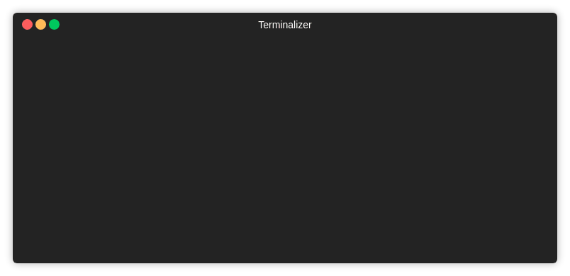

---

### Compilé versus interprété

<br/>

#### Python


---

### Sécurité

- Sécurité des personnes - avion, train, robot, ...
- Sécurité des machines - spatial
- Sécurité des données

<br/>

#### Solutions

- Cloisonnement des programmes
- Redondance des programmes et des machines
- Tests automatisés
- Mises à jours
- Langages formels (train)

Les réseaux sont à la fois une faiblesse pour la sécurité (hacking) et un avantage (mises à jours).

---

### Langages

- Assembleur &emsp;&#8592;
- C & C++ &emsp;&#8592;
- COBOL
- Perl
- PHP
- VBA &emsp;&#8592;
- Java &emsp;&#8592;
- Javascript - html - css &emsp;&#8592;
- Rust
- Swift &emsp;&#8592;
- Python v2.7
- Python v3 &emsp;&#8592;
- Go, Rust, Kotlin

---

### Langages

- **Assembleur** - bas niveau

- **C** - OS

- **Python v3** - multitâche, simplicité

- **Java** - multitâche, Android

- **Swift** - iOS (Apple)

- **Javascript - html - css** - internet

- **VBA** - excel

---

### Pourquoi la Python

- Le langage le plus utilisé depuis cette année (avec le Java)

- courbe d'apprentissage linéaire

- beaucoup de librairies utiles aujourd'hui : web

- beaucoup de librairies pour le futur : Big Data, IA

- Agréable à utiliser


---

# Python

1. Les commentaires

1. Les variables

1. Les conditions

1. Les boucles

1. Les fonctions

1. Les try-catch (ou try-except)

1. Les classes (programmation objet)

---

## Les commentaires

```py
....

# Un commentaire

...
```

---

## Les variables


```py
a = 2
type(a)
# ⇨ <class 'int'> ⇨ un entier

c = 3.14
type(c)
# ⇨ <class 'float'> ⇨ un réel

b = "coucou !"
type(b)
# ⇨ <class 'str'> ⇨ une chaine de caractères

a = a + 7 # ⇨ a contient maintenant la valeur 9

a = a + b # ⇨ Exception : TypeError:
          #               unsupported operand type(s) for +: 'int' and 'str'

une_variableAvecUnNom_BIZARRE = "toto"

```

Note:
Typage fort et dynamique et implicite.

---

## Les conditions

```py
a = 56
if a == 56:
    print("c'est vrai")

if a > 10:
    print("c'est vrai")
elif a > 40:
    print("c'est vrai mais on ne passera pas ici")
else:
    print("on ne passera pas ici")


if a == 56 and True:
    print("c'est vrai")

if a == 56 or False:
    print("c'est vrai")
```

---

## Les boucles

```py
i = 0
while i < 10:
    print(i) # ⇨ 0, 1, 2, 3, 4, 5, 6, 7, 8, 9
    i = i + 1


for i in range(10):
    print(i) # ⇨ 0, 1, 2, 3, 4, 5, 6, 7, 8, 9


tableau = ['abcd', 'toto', 42, 90, '90']
for i in tableau:
    print(i) # ⇨ abcd, toto, 42, 90, 90


string = 'hello'
for letter in string:
    print(letter) # ⇨ h, e, l, l, o
```

---

## Les fonctions
```py
print("coucou") # ⇨ c'est la fonction print
type("coucou") # ⇨ c'est la fonction type

def une_fonction(a, b, c = 12):
    # Ici on peut mettre plein de code
    variable_intermediaire = (a + b) / c

    # on retourne un résultat
    return variable_intermediaire


a = une_fonction(6, 18) # ⇨ 2.0
b = une_fonction(2, 6, 2) # ⇨ 4.0

print(a - b) # ⇨ - 2.0
```

---

## Les try-catch (ou try-except)
```py
try:
    print("une instruction ou tout va bien")
except:
    print("on ne passe pas ici")

try:
    12 / 0
    print("on ne passe pas ici") # ⇨  après l'exception
except ZeroDivisionError as a:
    print("on passe ici")
    print(a)
```

---

## Les classes (programmation objet)

```py
class Vehicule:
    def __init__(self, type): # fonction de construction de l'objet
        self.nb_roues = 'inconnu' # variable nb_roues créée dans à l'objet
        if type == 'voiture':
            self.nb_roues = 4

    def nombre_de_roues(self):
        return self.nb_roues

    def ajouter_une_roue(self):
        self.nb_roues = self.nb_roues + 1


mon_vehicule = Vehicule('voiture')
print( mon_vehicule.nombre_de_roues() ) # ⇨ 4
mon_vehicule.ajouter_une_roue()
print( mon_vehicule.nombre_de_roues() ) # ⇨ 5
```

---


# Merci !

                    </script>
                </section>
            </div>
        </div>

        <script src="lib/js/head.min.js"></script>
        <script src="js/reveal.js"></script>

        <script>
            // More info about config & dependencies:
            // - https://github.com/hakimel/reveal.js#configuration
            // - https://github.com/hakimel/reveal.js#dependencies
            Reveal.initialize({
                pdfMaxPagesPerSlide: 1,
                // disable controlled
                // width: "100%",
                height: "100%",
                // margin: 0,
                // minScale: 1,
                // maxScale: 1,

                fragmentInURL: true,
                progress: true,
                slideNumber: true,
                history: true,
                center: true, // align vertically
                dependencies: [
                    { src: 'plugin/markdown/marked.js' },
                    { src: 'plugin/markdown/markdown.js' },
                    { src: 'plugin/notes/notes.js', async: true },
                    { src: 'plugin/highlight/highlight.js', async: true, callback: function() { hljs.initHighlightingOnLoad(); } }
                ]
            });
        </script>
    </body>
</html>
